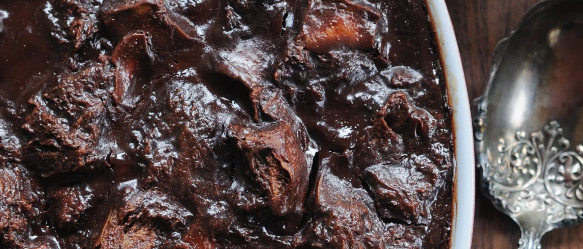

Return to Main Page
Chocolate Bread Pudding

- Ingredients
- Bread- 4 Cups Day old Bread, cubed or torn
- Milk- 4 cups
- Eggs- 4
- Cocoa Powder- 3 Heaping tablespoons
- Sugar- 3/4 to 1 cup
- Vanilla- 1 - 2 teaspoons
- Cinnamon- pinch if desired- optional
- Instructions
- Preheat oven to 350 degrees
- Scald milk by heating it up until skin forms on top
- Add sugar and bread to milk
- Whisk cocoa into eggs in separate bowl
- Temper the eggs by slowly adding about 1 cup of hot milk to eggs while whisking. This prevents you from making scrambled eggs
- Stir the egg/milk mixture back into the scalded milk
- Add vanilla and cinnamon if desired
- Pour into buttered casserole
- Bain Marie the casserole dish by placing it inside another larger casserole dish filed half-way with boiling or hot water.
- Bake at 350 Degrees until set, around 30-45 minutes. A knife inserted into the center should come out clean